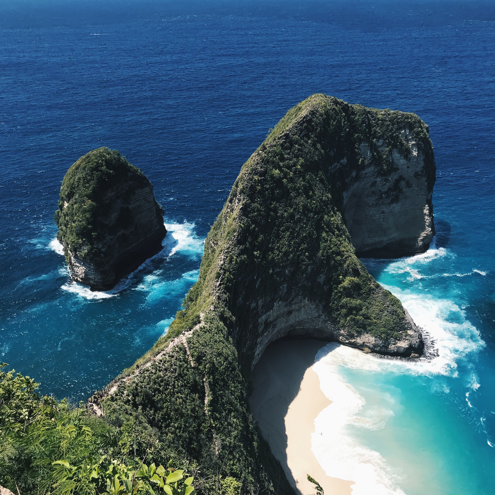
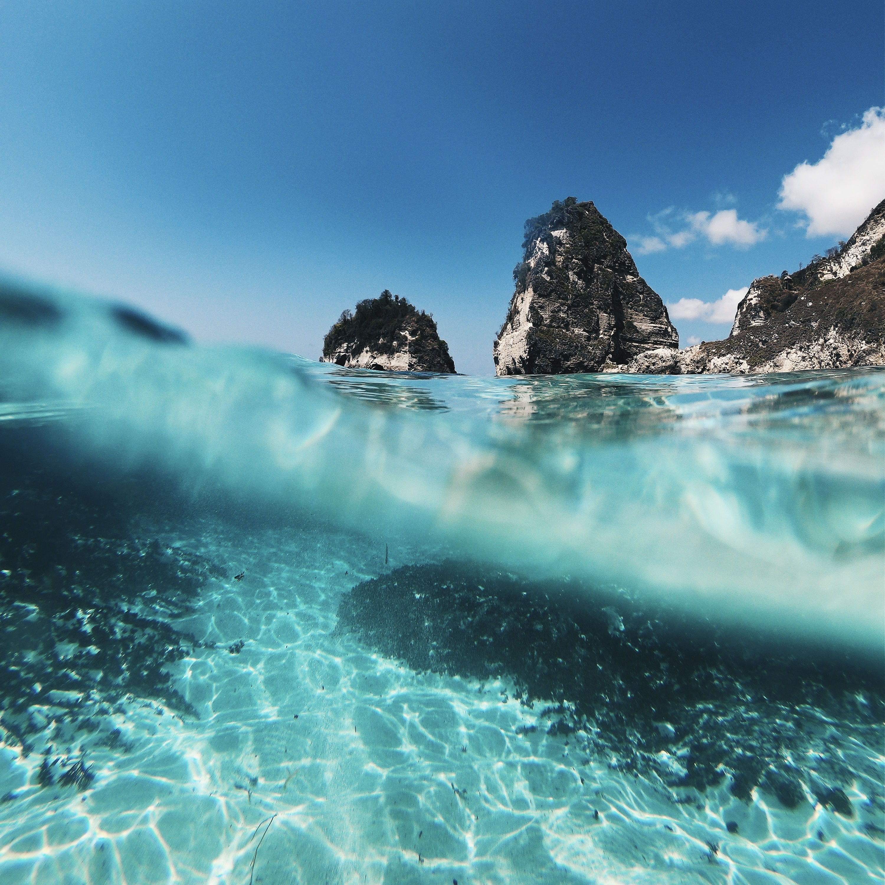
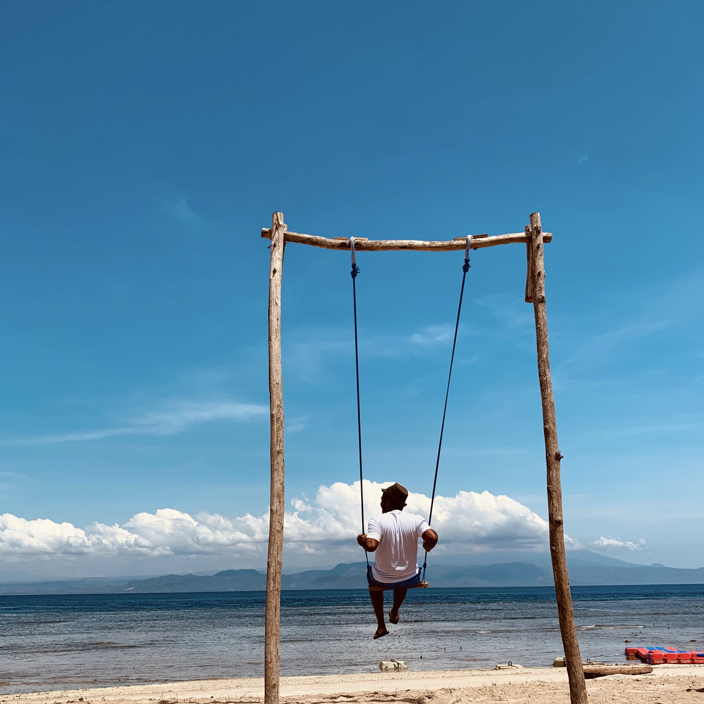
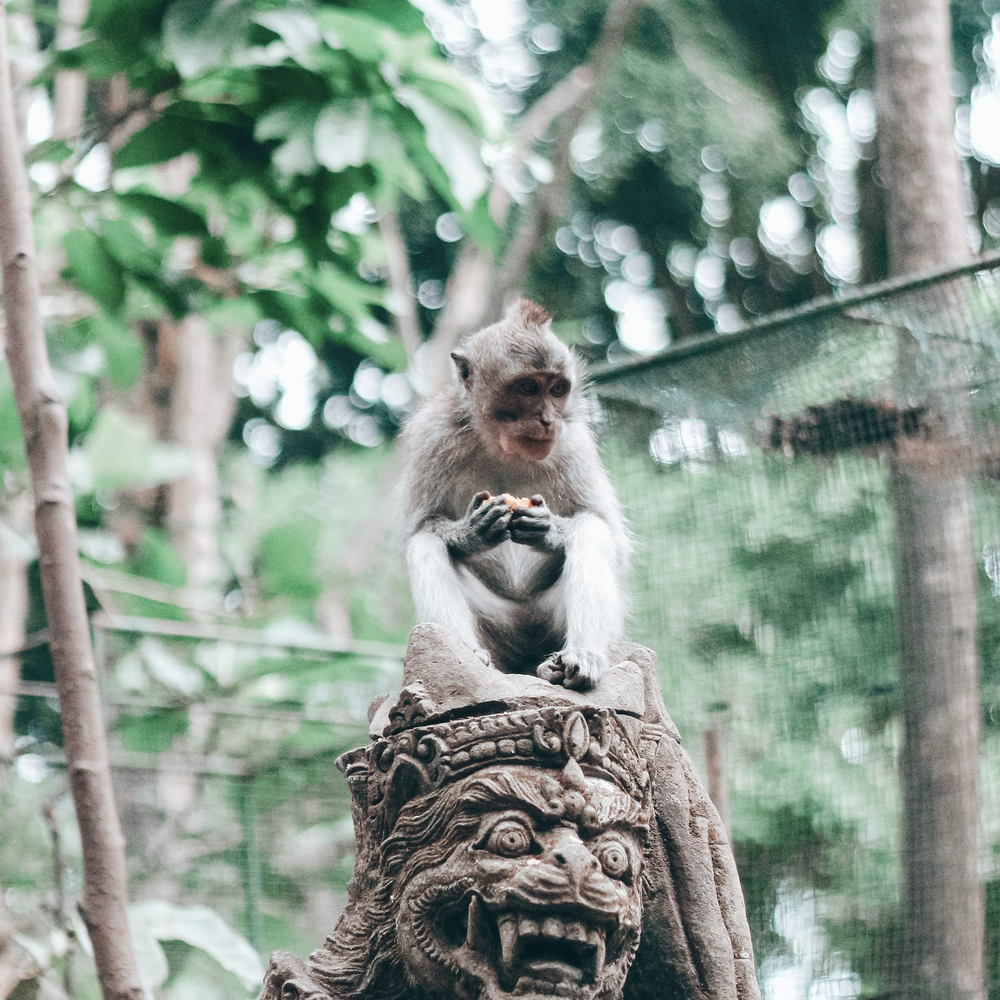
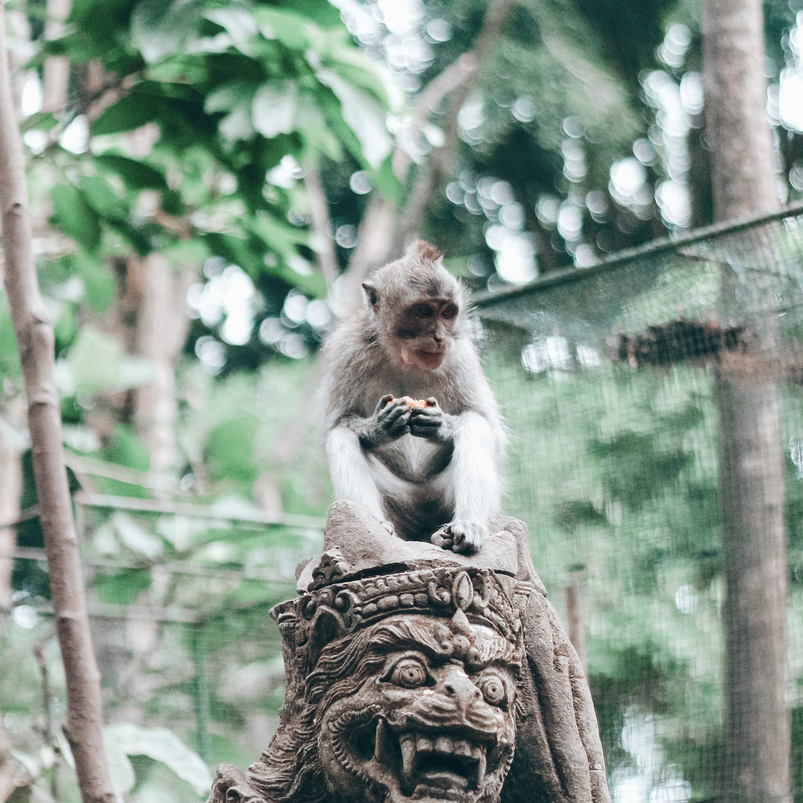
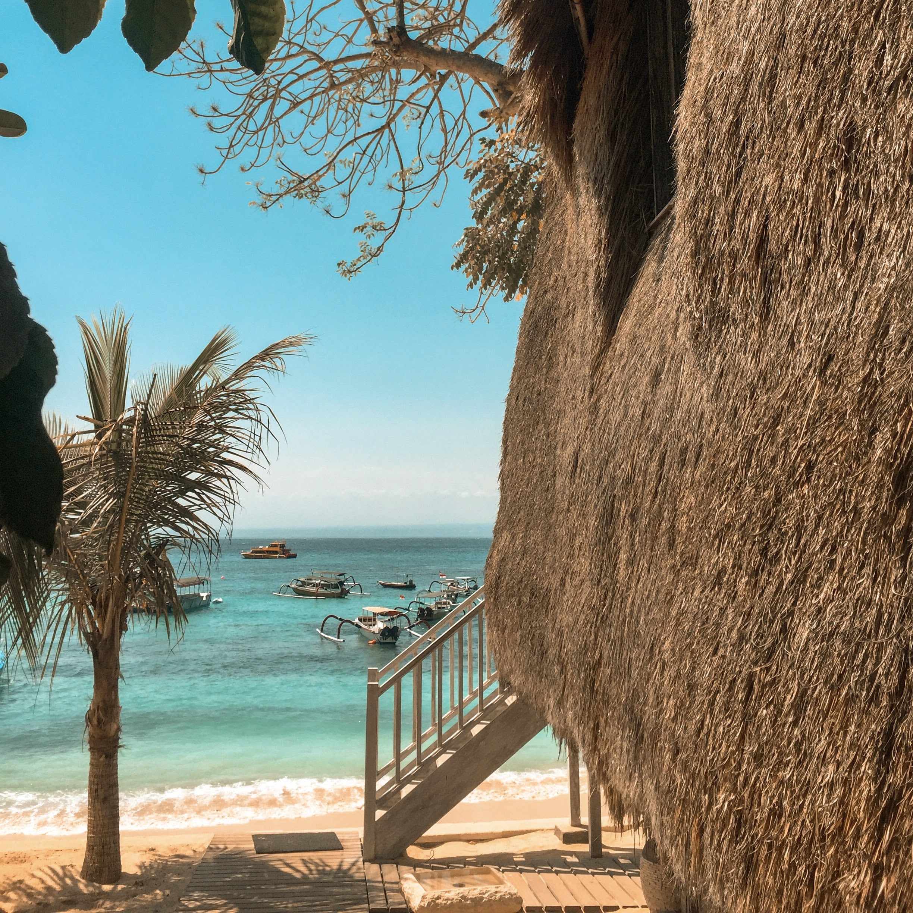
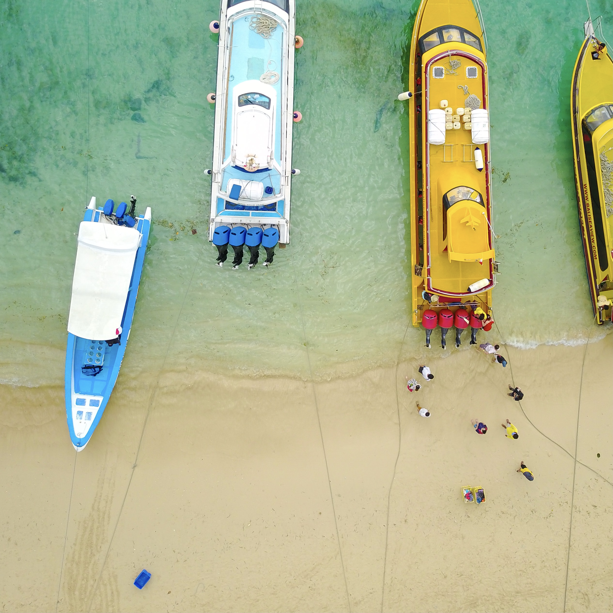
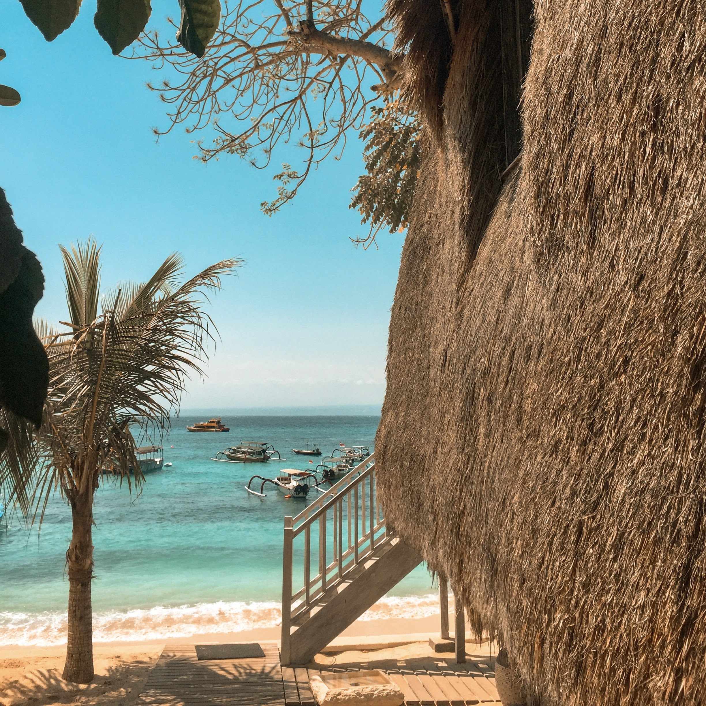
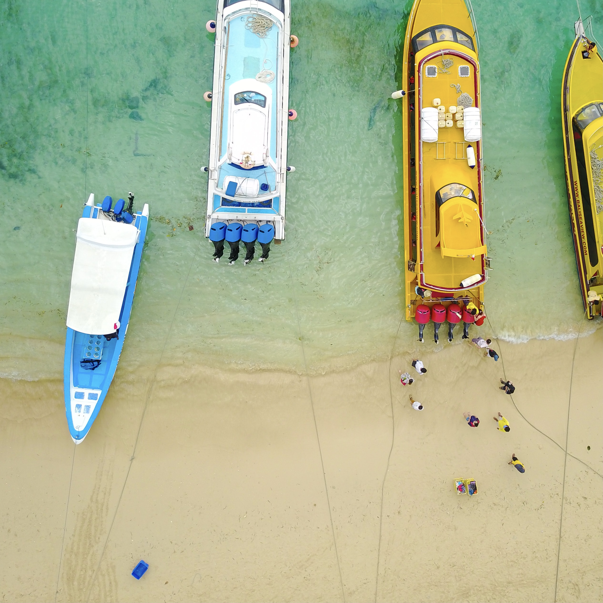

Nusa Penida
Nusa Penida is only a 35-minute boat ride from Bali but it’s a completely different world. The contrast between the pretty touristic Bali life and this original Indonesian lifestyle is quite noticeable. The sightseeing of Nusa Penida is amazing, so it won’t surprise you that its very popular among tourists. It’s most famous for the enormous cliffs and beautiful beaches. You’ll have to break a sweat and climb some steep stairs, but in the end it’s totally worth it.
  
 

 


